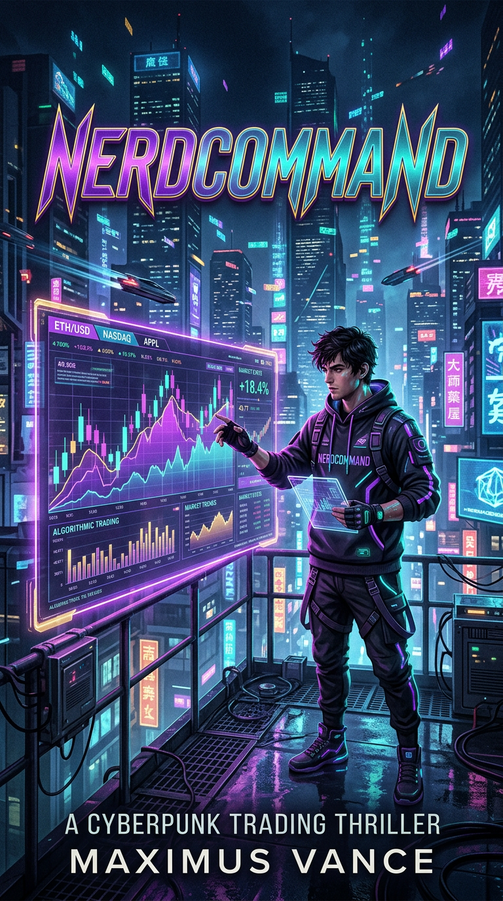
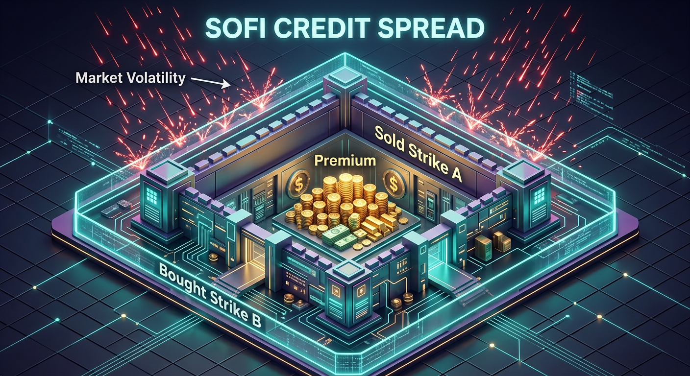
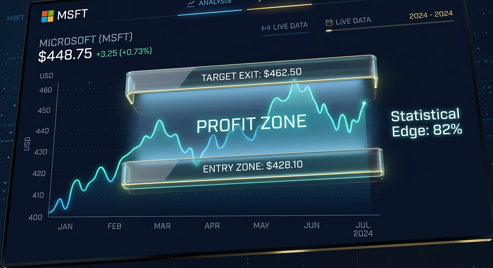
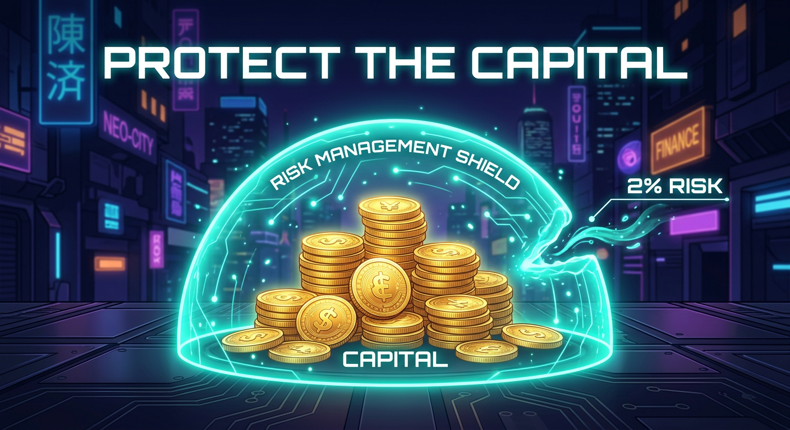

Welcome to the Nerdcommand collective. This guide is built for the beginner. You want to trade with care. You want to trade with a plan. You are in the right place.
Most people trade like they are at a casino. They guess. They hope. They lose. We do something different. We trade like the house. The house does not hope. The house uses math. The house wins over time.
In this book you will learn to use the urban landscape of the market. We focus on three tickers: SPX, SOFI, and MSFT. These are our powerhouses. They are steady. They are consistent. They are the streets we know best.
Your brain learns best when ideas come in small pieces, when you see the idea, and when you test yourself. So we built this book that way:
Read slow. Read twice. Do the quizzes. You will learn faster than you think.
The Statistical Advantage: Theta & Delta
In the urban market, "The Greeks" are your street maps. The Greeks are just numbers that tell you how risky an option is. Two Greeks matter most to us: Delta and Theta.
We look for a 70 to 80 percent chance of success. This means, if you took 10 of these trades, about 7 or 8 of them would win. That is a strong edge.
One trade is a coin flip. It can go any way. But many trades together follow the math. If your win rate is 75%, then over 100 trades you can expect about 75 wins. The math smooths out the bumps. This is why we trade the same setup over and over. We trust the long run.
Delta is a number from 0 to 1. It tells you the chance the option ends "in the money." We sell options with a Delta of 0.20 or lower. This means the stock has about an 80% chance of staying away from our danger zone.
Think of Delta like a shield. A Delta of 0.20 is a thick shield. A Delta of 0.50 is a thin shield. We want the thick one.
Theta is the clock. Every day that passes, the option you sold loses value. That is good for you, because you sold it. When it loses value, you can buy it back cheaper. The difference is your profit.
As a Nerdcommand trader, you are the house, not the gambler. The gambler pays you for time. Time always runs out. So time always pays you.
We only trade "high probability" setups. We do not care if the stock goes up, down, or sideways — as long as it does not move too far against us. In fact, the stock can even go down a little on a Bull Put Spread, and we still win. That is the power of the edge.
SPX, SOFI, and MSFT — the streets we know best.
We do not chase every stock. We stick to three. Knowing a few stocks well is safer than knowing many stocks a little. This is called focus.
Studies show experts beat generalists because they study ONE thing deeply. A chef who makes only burgers for years will outcook a chef who tries 50 dishes. Same in trading. When you watch the same three stocks every day, your brain builds a "feel" for them. You start to see the moves before they happen.


| Ticker | Spread Type | When | Account Size |
|---|---|---|---|
| SPX | 0DTE / short spreads | Daily income | Larger accounts |
| SOFI | Bull Put Spread | Monthly | Small accounts |
| MSFT | Bear Call Spread | Weekly (overbought) | Medium accounts |
How to actually open a trade, one move at a time.
Here is the exact order of moves. Follow them like a recipe. Do not skip steps.
Look for a stock trading above its 50-day Moving Average. The 50-day line is the average price over 50 days. When price is above it, the trend is healthy. This is your green light for a Bull Put Spread.
For SOFI, also look for strong support — a price level it has bounced off many times before (like $6 or $7).
Open your options chain. Check two things:
0.15 on the sold leg.If Delta is too high (like 0.40), walk away. The shield is too thin.
The money you collect up front minus the cost of insurance = your net credit. That credit is yours to keep if the stock stays above your sold strike.
Say SOFI is trading at $8.00. You think it will stay above $7.
$0.40 per share = $40 (1 contract = 100 shares).$0.20 per share = $20.If SOFI stays above $7, you keep the full $20. That is a 40% return on your $30 risk. Not bad for waiting a few weeks.
Never risk more than 2% of your total account on a single trade. If you have $500, your max risk should be $10. This is how you stay in the game long enough to win. One bad trade can never take you out.
Knowing when to leave is just as important as knowing when to enter.
Most beginners know how to open a trade. Few know how to close it. That is where they lose. Let's fix that.
If you collected $20 in credit, your goal is to buy it back when it drops to about $10. You keep the other $10. Then close the trade. Walk away. Why? Because the last $10 takes a long time and adds extra risk. Take the sure win.
Theta decay is fast at first, then slow. The first 50% of profit comes quickly. The last 50% crawls. You risk more time (and more market exposure) for less reward. Smart traders take the quick win and redeploy the money.
If your trade has 21 days or fewer left, watch it close. Gamma risk rises near expiration — the option can swing faster. If you are near your max profit, just close it.
If the trade goes against you and the loss hits 2x your credit, close it. If you collected $20, close it when the loss hits $40. Do not hope. Do not "wait for it to come back." Cut it. Live to trade another day.
Hoping a losing trade turns around is the #1 way small accounts die. The math does not care about your feelings. Follow the line. Close the trade.
| Situation | Action |
|---|---|
| You hit 50% of max profit | Close it. Take the win. |
| 21 days or fewer to expiration | Watch closely. Close if near profit. |
| Loss hits 2x your credit | Close it. Stop the bleed. |
| You feel panicked or greedy | Step away. Re-read this chapter. |
Your capital is your army. Don't send it into a losing battle.

You can be the best analyst in the world. If your risk is bad, you will still go broke. Risk rules come first. Strategy comes second.
Even with an 80% win rate, you WILL have losing trades. A row of 3 losses in a row happens more often than people think. If you risk 10% per trade, three losses in a row drops your account 27%. If you risk 2%, three losses drop it only 6%. Small risk means you survive the bad streak to reach the good streak.
| Account Size | Max Risk per Trade (2%) |
|---|---|
| $500 | $10 |
| $1,000 | $20 |
| $2,500 | $50 |
| $5,000 | $100 |
Your biggest opponent is not the market. It is your own brain.
Trading is 20% strategy and 80% psychology. Let's train the mind.
Your brain has two modes. System 1 is fast and emotional — fear, greed, panic. System 2 is slow and logical — your plan, your rules. The market tries to wake up System 1. Our job is to keep System 2 in charge. We do this with a written plan and rules we follow like a robot.
A habit has three parts: Cue → Routine → Reward. Your cue is the morning market open. Your routine is your daily loop. Your reward is the log entry and the steady income. Repeat this every day for 30 days. It becomes automatic. Automatic beats emotional, every time.
From small to strong, one rung at a time.
Here is the truth nobody tells beginners: growing a small account is slow on purpose. Slow is safe. Safe keeps you in the game. In the game, compounding does the rest.
Compounding means your profit earns profit. If you grow $500 by 5% a month, in one year it becomes about $897. In two years, about $1,610. The growth curves up like a rocket. But it only works if you never blow up the account. So rule #1 is always: don't lose the base.
| Level | Account | Goal |
|---|---|---|
| 1 — Trainee | $0 – $1,000 | Learn. Paper trade first. Then 1 small real trade at a time. |
| 2 — Operator | $1,000 – $3,000 | 2–3 SOFI spreads at a time. Build consistency. |
| 3 — Engineer | $3,000 – $10,000 | Add MSFT weekly spreads. Diversify. |
| 4 — Commander | $10,000+ | Add SPX. Scale size with rules. |
Your two personal plans below match Level 1 and the start of Level 2.
Your starter account. Built for you, step by step.
With $500, your job is NOT to make a lot of money fast. Your job is to not lose it while you learn the real game. Here is your exact plan:
One SOFI Bull Put Spread:
Build a small portfolio. Two tickers working for you.
With $1,000 you have room to run two tickers at once. This is your first real "portfolio." Here is the build, step by step.
| Bucket | Amount | Job |
|---|---|---|
| Cash Reserve | $600 (60%) | Safety net. Never touched except for new trades. |
| SOFI Engine | $250 | Monthly Bull Put Spreads. |
| MSFT Engine | $150 | Weekly Bear Call Spreads (overbought only). |
Max risk per trade now = $20 (2% of $1,000). Still small. Still safe.
| Day | Task |
|---|---|
| Monday | Review both tickers. Check 50-day MA and support/resistance. |
| Wednesday | Manage open trades. Take profit if at 50%. |
| Friday | Close trades near profit. Log results in journal. |
| End of month | Open one new SOFI monthly. Review win rate. |
At any time, have no more than 3 open trades and never more than 1 per ticker at once. This keeps your mind clear and your risk contained.
Answer these before you place your first real trade.
| Term | Plain Meaning |
|---|---|
| Credit Spread | Trade where you collect money up front. You keep it if the stock behaves. |
| Bull Put Spread | Sell a put and buy a lower put. You win if the stock stays up. |
| Bear Call Spread | Sell a call and buy a higher call. You win if the stock stays down. |
| Delta | Directional risk. Lower Delta = thicker shield = safer. |
| Theta | Time decay. Pays the seller every day. |
| Premium | The money you collect for selling the option. |
| 50-day MA | Average price over 50 days. Your trend green light. |
| 0DTE | Zero days to expiration. Same-day trade. |
| Paper Trading | Practice trading with fake money. |
| POP | Probability of Profit. We want 70–80%. |
| Max Risk | The most you can lose on a trade. Always known in advance. |
YOU ARE NOW EQUIPPED.
Train the eye. Follow the rules. Be the house.